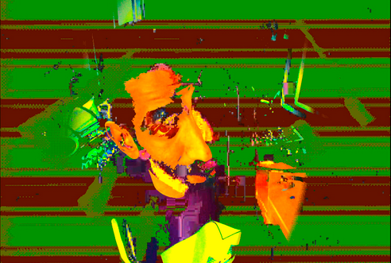
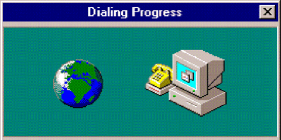

introduction

 Hi! We're Nick Briz and jon.satrom, we're part of netizen.org, a collective of new media artists, educators, and activists on a mission to reestablish human agency in the information age through public lectures, digital tools, online events and workshops like this one!
Hi! We're Nick Briz and jon.satrom, we're part of netizen.org, a collective of new media artists, educators, and activists on a mission to reestablish human agency in the information age through public lectures, digital tools, online events and workshops like this one!
We're going to be creating work for the World Wide Web! While most folks engage with the Web through corporate platforms, it's important to remember that the Web is a digital public commons: no one owns the Web and anyone can contribute to it, all you need is a browser (there are many), a server (there are many of these as well) and a computer connected to the Internet!

We'll be creating our own web apps outside the walled gardens of big tech using netnet.studio ◕ ◞ ◕ an open-source browser-based hypermedia maker-space for fully realizing the Web’s creative potential! netnet is both a place for learning and making, in this workshop we'll be using it mostly to make, but we encourage you to explore its many interactive lessons afterwards starting with the Orientation tutorial!
net.art + artware
We're going to be creating our own experimental web based drawing apps. We'll be drawing inspiration from work at the intersection of two new media art sub-genres: internet art and software art. The former refers to art that embraces the Internet as a creative medium. Like the Web itself, it began in the mid 1990s, the first wave of internet artists is often referred to as the net.art movement.
Dig Deeper! To learn more, check out the interactive tutorials on this topic on netnet.studio: net.art (part 1) when artists discovered HTML as well as net.art (part 2) from ASCII Art to Form Art.
Software art (aka artware) is an umbrella term for all manner of experimental software projects by artists, hackers and other creative technologists that explore software (apps, programs, exectubales, etc) as a creative medium. Where mainstream software is typically aimed at providing some utility for the user, artware departs from this convention to explore a number of other themes and concerns.
Not all artware is web-based and not all net.art is software, but the intersection of the two is an exciting one, let's look at a couple examples:

emoji.ink by tig.ht (aka Yung Jake and Vince Mckelvie) is as much a "software art" piece as it is a tool for creating experimental drawings entirely out of emojis. You can read more about it in the New York Times article Digital Artist Yung Jake Scores With Emoji Portraits as well as from watching this video.
Even more meta, the project InterFace Painter by Pox (aka jon.satrom and Ben Syverson) is an app for creating apps by drawing their interfaces, what the duo playfully refers to as "expressive UI". It's part of a suite of experimental software art projects aimed at challenging the tech industry's core values. You can watch them demo InterFace Painter and other pieces in their satirical start-up presentation at the Notacon hacker conference.

These are both examples of a popular artware sub-genre: the experimental drawing app. There are of course numerous different apps out there for creating digital drawings on a computer, like Adobe Illustrator, Canva, Procreate, etc. These would be considered traditional utilitarian software, the goal is to provide the user the best digital drawing experience, often modeled on traditional drawing tools, this is especially the case for apps like Procreate which aim to mimic physical brushes and strokes (an approach to design known as skeuomorphism). This is a very different goal from what drives artists making software art or artware, who are motivated instead by other experimental aims and conceptual questions. While many of the references in our Software Art: Notes and Examples are practically usable they're less concerned with creating something that is "user friendly" or "works well" and more interested in pushing the boundaries of what we imagine a drawing tool is for and how it should work.
let's code!
As artists, when exploring new domains, we often start by copying other artists. We'll begin by recreating simple versions of emoji.ink and InterFace Painter. Then we'll mash these up and remix them into something new.
GitHub (optional free hosting)
Towards the end of the workshop we'll use GitHub to easily version (keep track of changes) our project and publish it work to the Web. If you haven't already, we recommend creating a free account. That said, you don't technically need GitHub (or any account) to publish work to the Web, we could run our own servers at home (but that's outside the scope of this workshop).
netnet.studio (code editor)
As mentioned earlier, we'll be using netnet.studio to write our code, if you haven't yet, visit that link and introduce yourself to netnet! We specifically designed this platform for artists and designers exploring the web as a creative medium for the first time, but here again it's important to realize that you don't technically need this, or any speicifc app, to write code (you could just use paper and pencil, so long as you can OCR it and get it on a server).
code demos
We're going to build out our artware from scratch one line at a time. Along the way we'll point out different check-points which are documented in the demos below. There are also demos for possible branches, or change in directions, which we won't be covering during the workshop, but which you might want to explore on your own. These demos are not only editable but also annotated, meaning netnet can guide you through the important parts in an interactive lesson before you remix them.
- hello world wide web: our basic template and starting point.
generative art
- random emojis: an introduction to randomness and other core concepts for creating generative compositions.
- animation loop: this demo takes the static generative composition created in the last demo and brings it to life through an animation loop, another core generative art concept.
- oscillations && spirals: in addition to randomness, sine and cosine functions are among the most commonly used tools for creating generative compositions.
interactive art
- mouse events: in this demo we'll take our generative composition in an interactive direction, the first step in recreating emoji.ink
- selection menu: in this demo we'll add a menu, so that users can select which emoji to draw with rather than selecting them at random
- save button: in this demo we'll add a button to download what we've drawn as an HTML page.
other ideas
- interface painter: with a few simple edits, we can convert our emoji drawing tool into a UI drawing tool similar to InterFace Painter
- draw modifiers: there are so many different directions we can take this basic drawing tool. For example, we can start to modify how the elements get drawn, this demo provides a simple example of that.
- mobile touch: all the previous examples have used the mouse to draw, but on mobile devices there is no mouse, so we'll need to make some modifications if we want our app to work on touch devices as well.
workign on multi-file projects
So far, everything we've created can be expressed in a single HTML file, but often websites and apps are made from a collection of different files. For example, if we wanted to create a GIF drawing tool, we could modify what we've made in the demos above so that it renders <img> elemnts instead of emojis or form elements. Media elements, like <img>, <video> and <audio> all need to point to a src (aka "source"), a reference to an actual media file. This means, in order to create a GIF drawing tool, we need to be able to include media assets. To do this we need to go beyond a single page app and create a "project", a folder with more than one file inside it.
For the last part of the workshop we'll learn how to convert our sketch into a project (you can review notes for doing that on our netnet.studio/docs). If you don't have any animated gifs readily available, you can download our gif pack to experiment with.
Please share what you make with us, email us at hi@netizen.org, press Ctrl+S (or CMD+S on Mac) to generate a sharable link to your netnet sketch. Or, if you creatd a multi-file project, use the "web-publish" feature to publish your app to the web and email us your published URL!